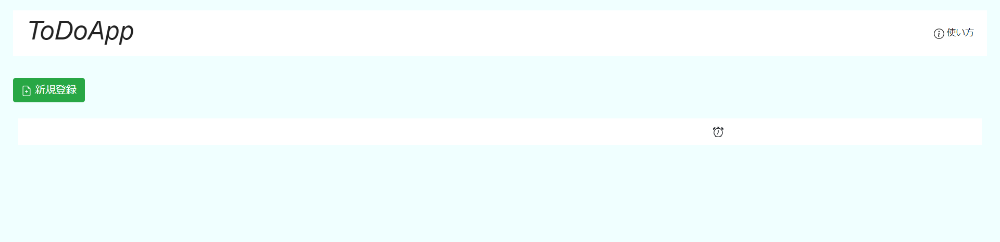
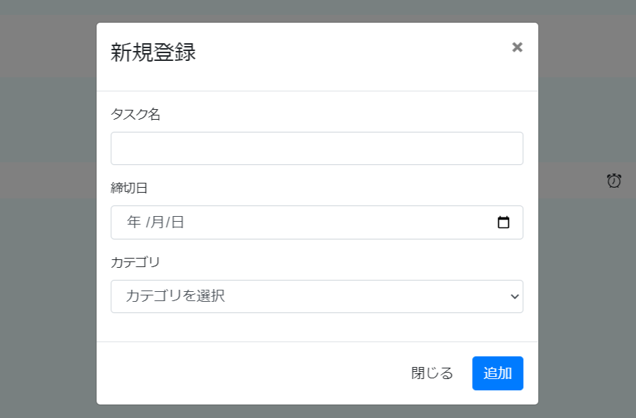
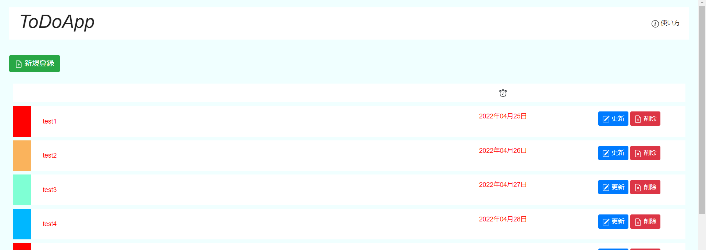

本アプリにはタスクの追加、一覧表示、更新、削除の機能があります。
アプリを使いこなしてタスク管理ができるようになりましょう！
タスクが追加されていない状態だとヘッダーとボタンのみ存在しています。

ボタンをクリックするとフォームが開きます。

登録したいタスクの名前と締切日、カテゴリーを設定して登録ボタンを押すと、記入したデータが反映されます。

登録されたタスクは最初は登録順に並んでいます。
また、表示方法にも決まりがあります。
左から順にタスクのカテゴリとステータス、タスクの名前、締切日、更新ボタン、削除ボタンです。
タスクのカテゴリは以下の4色で表されています。
| 生活 | 勉強 | 仕事 | 趣味 |
| アイコン | 背景色と文字色 | |
|---|---|---|
| なし | 未着手[背景色:白 文字色:赤] | |
| 作業中[背景色:白 文字色:緑] | ||
| 完了 [背景色:灰 文字色:黒] |
登録されたタスクは編集を行うことが可能です
登録時に間違えてしまったり締切日の更新や進捗具合を記録する際は更新ボタンをクリックしてください。
更新ボタンをクリックすると、ボタンを押したタスク内の現状登録されているデータが表示されます。
更新したい情報を書き換えたら更新ボタンを押して、内容を反映させましょう。
登録されたタスクは削除することができます。
削除ボタンをクリックすると、ボタンを押したタスクの名前の入ったアラートが表示されます。
削除したいデータがあっている場合、OKボタンをクリックしてください。
一度削除したデータは復旧できません。削除する際は再度確認してください